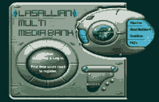

|
Documentation
Office : Updates
MULTIMEDIA
BANK
By: Joie Alvarez
The development of ITC's Multimedia Bank is going in great
strides with the addition of Reynaldo Mendoza, our newest
graphic/web designer in the Documentation Office.He was assigned
the multimedia bank project long before his first day of work.
In
designing the Multimedia Bank, Rey was able to come up with
3 studies. The first study has a maize colored, plain back
ground with a blue-green tone graphic design. It has three
(3) main links that changes color on mouse over. Over the
center of the background is very much similar to the first.
The design is sort of a rectangular TV screen with chrome
, metallic border. The greater portion of the rectangle displays
a couple of enhanced images masked by pin-stripe shade. The
main links and the DLSU System logo are situated on the right
side of the rectangle. You can think of a state-of-the-art,
futuristic, digital camera as you catch sight of the third
study, It has Flash images, a silhouette of an archer, and
links that changes color on mouse over, Over-all, the designs
speak of simplicity and ultra-modern impression.
These
designs were presented to the members of the Web Development
Team for review. With all the studies bearing almost the same
level of appeal, the Web Team had a hard time choosing which
scheme will become the face of the Lasallian Multimedia bank.
After some deliberations, the team opted for the third design
wiht minor enhancements. The decision was based in terms of
download time, readabilty and over-all look.
Also
deep in the back-end development of the Multimedia Bank is
Mark Rufino of the Systems Management Office. He is now busying
himself with incorporating greater security features for user
uploading of multimedia files.
Upon
launching, the Multimedia Bank will host Lasallian-related
images, sounds, videos as well as instruction and reference
materials that will serve the whole academic community. There
are also plans to make this available to other DLSU system
schools through the use of mirror sites for each campus.
From CGI to ASP
< active server pages >
by:
Francis Mark Santos
The
online forms maintained by the Documentation Office in the
DLSU Manila web site have entered the 21st century, so to
speak. From the previous perl cgi (common
gateway interface) scripts that reside in the mail2 server,
the forms are ported to asp (active server pages) for better
compatibility with the windows 2000 Internet Information Services
operating system of our web server.
The
registration forms for the modules of CREM, feedback forms
of MBA Online and updates/pledge forms of the Alumni Office
were the first to be converted into asp.All the online forms
to be made in the future will be in asp unless a better and
easier to use cgi language will be developed.
Library
Portal
by:
Francis Mark Santos
The
DLSU system Library Portal System (LPS) sports a new design
courtesy of Lemuel Cabia. The LPS is a web-based system that
allows searching of the library holdings of the different
dlsu system schools.
Mark Rufino of the Systems Management Office developed the
system that allows a standard interface and result generation
of queries from the different platforms used by the campuses.
My.LaSalle
Portal Web Design
by:
Francis Mark Santos
Another
design project was finished by Lemuel Cabia for the my.lasalle
portal the new MLS look promises to be more lively and youth-oriented.
It will also boast of a more intuitive user interface for
the benefit of the students who will use the system for the
first time.for the headline.
DOCU
Newbie
by:
Celine V. Rivera
Let's welcome a new addition to the Web Development Team,
Rey Mendoza. Rey is a graphics/ web designer and very good
at creating images. He is an expert in photo restoration and
image editing. He can make you appear or disappear in a group
picture, or make you younger or older (for a fee, of course!).
Let's
hear it from the Newbie
by:
Rey Mendoza
"I
believe that my first few weeks here are not enough to gauge
the whole ITC department. There is always more than what meets
the eye.
But
from what I have seen, I think this is a very healthy working
environment. People often call each other by first names and
not necessarily "sir" or "mam". Ideas
are encouraged to be spoken out.Last week, the SMO prepared
for that "name that tune" activity. Team building
activities are very important aspects of a working environment.
It teaches us the value of teamwork and it can be a stress-releasing
activity at the same time.
And
everybody is encouraged to take an extra-curricular activity,
be it a charity work or even take a masteral course. This
is good for the mind and soul. Charity work is always good
for the soul because the feeling that you have helped someone
in your own little way is incomparable and priceless. Taking
a training or a masteral course
is good for the mind. As Stephen Covey, the author of "Seven
Habits of Highly Effective people" says: Always sharpen
your saw (meaning, your mind). It is not enough that we use
our saw (mind) to complete our tasks. We should take time
to sharpen the saw so that we can accomplish more tasks in
the future.
La
Salle's holistic approach in the working environment is commendable.
It is not everyday that people get a chance to work in this
kind of environment (and I speak from experience).
Yeah,
I think I already like it here."
|